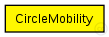
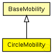

This documentation is released under the Creative Commons license
This documentation is released under the Creative Commons licenseC++ definition: click here
Moves the node around a circle.
See also: ConnectionManager
Author: Andras Varga
The following diagram shows usage relationships between types. Unresolved types are missing from the diagram. Click here to see the full picture.
The following diagram shows inheritance relationships for this type. Unresolved types are missing from the diagram. Click here to see the full picture.
| BaseMobility (simple module) |
Module which is responsible for mobility related information like position and movement BaseMobility itself defines a static mobility pattern (means only a position, no movement). Mobility modules which extend from this module willd efien more complex movement patterns. |
| Name | Type | Default value | Description |
|---|---|---|---|
| notAffectedByHostState | bool | true | |
| coreDebug | bool |
debug switch for the core framework |
|
| x | double |
x coordinate of the nodes' position (-1 = random) |
|
| y | double |
y coordinate of the nodes' position (-1 = random) |
|
| z | double |
z coordinate of the nodes' position (-1 = random) |
|
| debug | bool |
debug switch |
|
| cx | double |
x coord of the center of the circle |
|
| cy | double |
y coord of the center of the circle |
|
| r | double |
radius of the circle |
|
| speed | double |
speed of the host (in m/s) |
|
| startAngle | double |
starting angle (degreees) |
|
| updateInterval | double |
time interval to update the hosts position (seconds) |
| Name | Value | Description |
|---|---|---|
| class | CircleMobility |
// // Moves the node around a circle. // // @see ConnectionManager // @author Andras Varga // simple CircleMobility extends BaseMobility { parameters: @class(CircleMobility); bool debug; // debug switch double cx; // x coord of the center of the circle double cy; // y coord of the center of the circle double r; // radius of the circle double speed @unit(mps); // speed of the host (in m/s) double startAngle @unit(deg); // starting angle (degreees) double updateInterval @unit(s); // time interval to update the hosts position (seconds) }
This documentation is released under the Creative Commons license